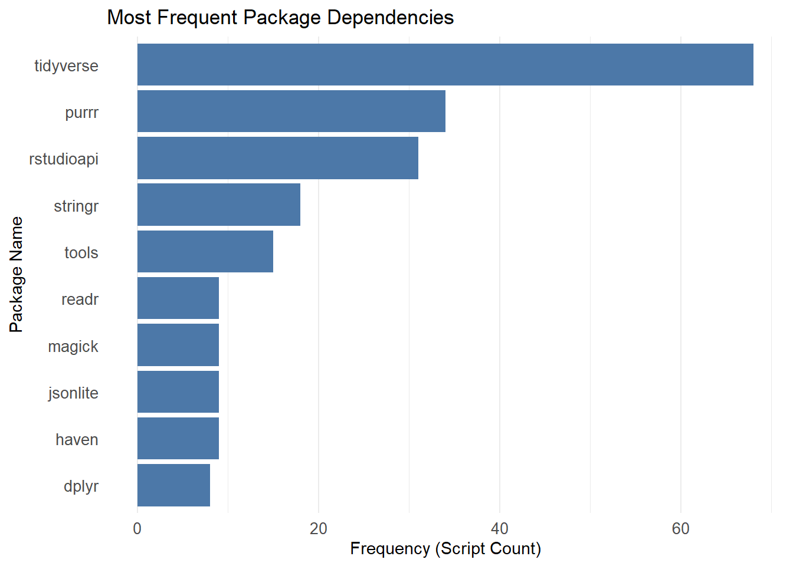

Code
# install.packages(c("DT", "tidyverse", "rstudioapi", "readr", "tools"))This notebook provides a static analysis framework for auditing R code (.R) and literate programming documents (.qmd, .Rmd).
//
Ce cahier de notes fournit un cadre d’analyse statique permettant de vérifier le code R (.R) et les documents de programmation littéraire (.qmd, .Rmd).
Static analysis refers to the examination of source code without executing it. Our objective is to safely assess code quality, reproducibility, and potential security risks without triggering harmful scripts. // L’analyse statique consiste à examiner le code source sans l’exécuter. Notre objectif est d’évaluer en toute sécurité la qualité du code, sa reproductibilité et les risques potentiels pour la sécurité sans déclencher de scripts nuisibles.
“Code rot” is a pervasive issue in research. Scripts that run perfectly on a researcher’s laptop often fail in other environments due to undocumented dependencies, absolute paths (e.g., setwd()), or outdated package versions (Stodden 2010). // La « dégradation du code » est un problème très répandu dans le domaine de la recherche. Les scripts qui fonctionnent parfaitement sur l’ordinateur portable d’un chercheur échouent souvent dans d’autres environnements en raison de dépendances non documentées, de chemins absolus (par exemple, setwd()) ou de versions obsolètes des paquets (Stodden 2010).
This notebook evaluates code files on three levels:
//
Ce cahier d’exercices évalue les fichiers de code à trois niveaux :
We use tidyverse for data manipulation and rstudioapi for interactive directory selection.
//
Nous utilisons tidyverse pour la manipulation des données et rstudioapi pour la sélection interactive des répertoires.
# install.packages(c("DT", "tidyverse", "rstudioapi", "readr", "tools"))library(tidyverse)
library(DT)
library(rstudioapi)
library(readr)
library(tools)This block allows for interactive selection of the image directory. If running in a non-interactive environment, it defaults to the path defined in the YAML header.
//
Ce bloc permet de sélectionner de manière interactive le répertoire contenant les images. En cas d’exécution dans un environnement non interactif, le chemin par défaut est celui défini dans l’en-tête YAML.
# 1. Try to select interactively if in RStudio
if (interactive() && .Platform$OS.type == "windows") {
selected_dir <- rstudioapi::selectDirectory(caption = "Select Code Directory")
} else {
selected_dir <- NULL
}
# 2. Logic to determine final directory
if (!is.null(selected_dir)) {
target_dir <- selected_dir
} else {
target_dir <- params$target_dir
}
print(paste("Analyzing directory:", target_dir))[1] "Analyzing directory: ."We scan the directory for .R, .qmd, and .Rmd files. Other file extensions can be added by adding the extension inside the parentheses of the pattern line.
//
Nous analysons le répertoire à la recherche de fichiers .R, .qmd et .Rmd. D’autres extensions de fichiers peuvent être ajoutées en les indiquant entre parenthèses dans la ligne de motif.
code_files <- list.files(
path = target_dir,
pattern = "\\.(R|qmd|Rmd)$",
recursive = TRUE,
full.names = TRUE,
ignore.case = TRUE
)
print(paste("Found", length(code_files), "code files."))[1] "Found 81 code files."head(code_files)[1] "./_book/Scripts/Inspect_Code_Script.R"
[2] "./_book/Scripts/Inspect_Containers_Script.R"
[3] "./_book/Scripts/Inspect_csv_Script.R"
[4] "./_book/Scripts/Inspect_dta_Script.R"
[5] "./_book/Scripts/Inspect_Extensions_Script.R"
[6] "./_book/Scripts/Inspect_gpkg_Script.R" Static Analysis involves examining the source code without executing it. This is safer for curators than running untrusted scripts. We parse the code to check for syntax errors and use Regular Expressions (Regex) to identify dependencies and risks. This function performs four checks per file:
Safe Reading: Uses readr::read_lines to handle encoding nuances.
Syntax Checking: Uses R’s parse() function to verify structural integrity..
Comment Stripping: Removes comments to prevent false positives (e.g., commented-out libraries).
Pattern Matching: Scans for dependencies, risky commands, and secrets.
//
L’analyse statique consiste à examiner le code source sans l’exécuter. Cette méthode est plus sûre pour les modérateurs que l’exécution de scripts non fiables. Nous analysons le code pour détecter les erreurs de syntaxe et utilisons des expressions régulières (Regex) pour identifier les dépendances et les risques. Cette fonction effectue quatre vérifications par fichier :
Lecture sécurisée : utilise readr::read_lines pour gérer les nuances d’encodage.
Vérification syntaxique : utilise la fonction parse() de R pour vérifier l’intégrité structurelle.
Suppression des commentaires : supprime les commentaires pour éviter les faux positifs (par exemple, les bibliothèques commentées).
Correspondance de motifs : recherche les dépendances, les commandes à risque et les secrets.
analyze_r_file <- function(file_path) {
fname <- basename(file_path)
# Regex Patterns
patterns <- list(
# Explicit loading: library(pkg), require(pkg), p_load(pkg)
library_call = "(?:library|require|p_load)\\s*\\(\\s*[\"']?([a-zA-Z0-9\\.]+)[\"']?\\s*\\)",
# Implicit loading: package::function
implicit_call = "([a-zA-Z0-9\\.]+)::[a-zA-Z0-9_\\.]+",
# API Tokens (Heuristics for GitHub, Slack, etc.)
tokens = "(?:ghp_|sk-|xoxb-|xoxp-)[a-zA-Z0-9]+"
)
# Risk Patterns (Bryan, 2017)
risk_patterns <- list(
"Hard Setwd" = "setwd\\s*\\(",
"System Call" = "(?:system|shell|system2)\\s*\\(",
"Web Download" = "(?:download\\.file|curl_download)\\s*\\(",
"Source File" = "source\\s*\\("
)
# Absolute Path Pattern (Windows/Unix roots)
abs_path_pattern <- "(?:[a-zA-Z]:\\\\|/Users/|/home/|/scratch/)"
tryCatch({
# 1. Read File Content
raw_lines <- readr::read_lines(file_path, lazy = FALSE)
# 2. Syntax Validation
syntax_status <- "Valid"
tryCatch({
parse(file = file_path, keep.source = FALSE)
}, error = function(e) {
clean_msg <- gsub("[\r\n]+", " ", e$message)
syntax_status <<- paste("Error:", clean_msg)
})
# 3. Strip Comments for Analysis
clean_lines <- gsub("#.*", "", raw_lines)
content_str <- paste(clean_lines, collapse = "\n")
# 4. Extract Dependencies
lib_matches <- str_match_all(content_str, patterns$library_call)[[1]]
explicit_pkgs <- if (length(lib_matches) > 0) lib_matches[, 2] else character(0)
colon_matches <- str_match_all(content_str, patterns$implicit_call)[[1]]
implicit_pkgs <- if (length(colon_matches) > 0) colon_matches[, 2] else character(0)
all_pkgs <- unique(c(explicit_pkgs, implicit_pkgs))
all_pkgs <- setdiff(all_pkgs, "base") # Exclude base R
packages_str <- paste(sort(all_pkgs), collapse = ", ")
# 5. Identify Risks
risks_found <- names(risk_patterns) %>%
map_chr(function(risk_name) {
if (any(str_detect(clean_lines, risk_patterns[[risk_name]]))) return(risk_name) else return(NA)
}) %>%
discard(is.na) %>%
paste(collapse = "; ")
# 6. Count Absolute Paths
num_abs_paths <- sum(str_count(clean_lines, abs_path_pattern))
# 7. Scan for Secrets (on raw lines)
num_tokens <- sum(str_count(raw_lines, patterns$tokens))
tibble(
FileName = fname,
FileType = tools::file_ext(fname),
Syntax_Check = syntax_status,
Packages = substr(packages_str, 1, 150),
AbsPathsFound = num_abs_paths,
Other_Risks = risks_found,
Potential_Secrets = num_tokens,
Status = "Success"
)
}, error = function(e) {
tibble(
FileName = fname,
FileType = tools::file_ext(fname),
Syntax_Check = paste("Read Failed:", e$message),
Packages = "", AbsPathsFound = NA, Other_Risks = "", Potential_Secrets = NA,
Status = "Failed"
)
})
}We map the analysis function over the list of files detected in the previous step.
//
Nous appliquons la fonction d’analyse à la liste des fichiers détectés à l’étape précédente.
if (length(code_files) > 0) {
report <- purrr::map_dfr(code_files, analyze_r_file)
datatable(report,
caption = "Table 1: Code Inspection Report",
options = list(scrollX = TRUE))
} else {
message("No code files found.")
}Understanding the software environment is critical for long-term preservation. This chart illustrates the most frequently used packages across the analyzed codebase, helping curators prioritize which libraries to document in renv.lock or DESCRIPTION files.
//
Il est essentiel de bien comprendre l’environnement logiciel pour assurer la conservation à long terme. Ce graphique présente les paquets les plus fréquemment utilisés dans l’ensemble du code analysé, ce qui aide les conservateurs à déterminer quelles bibliothèques documenter en priorité dans les fichiers renv.lock ou DESCRIPTION.
if (nrow(report) > 0 && any(report$Packages != "")) {
dependency_counts <- report %>%
filter(Packages != "") %>%
separate_rows(Packages, sep = ", ") %>%
count(Packages, sort = TRUE) %>%
head(10)
ggplot(dependency_counts, aes(x = reorder(Packages, n), y = n)) +
geom_col(fill = "#4C78A8") + # Standard formal blue
coord_flip() +
labs(
title = "Most Frequent Package Dependencies",
x = "Package Name",
y = "Frequency (Script Count)"
) +
theme_minimal() +
theme(
panel.grid.major.y = element_blank(),
axis.text = element_text(size = 10)
)
} else {
message("No packages detected to visualize.")
}
#| label: save-results
output_dir <- file.path("Results", "Inspect_rCode")
if (!dir.exists(output_dir)) dir.create(output_dir, recursive = TRUE)
output_file <- file.path(output_dir, paste0("Code_Inspection_", Sys.Date(), ".csv"))
write_csv(report, output_file)
message("Report successfully saved to: ", output_file)Use the report to prioritize fixes:
Reproducibility (Packages): If Packages is empty for a script, verify if it relies on base R only or if the researcher assumes packages are pre-loaded.
Portability (AbsPathsFound): Any file with AbsPathsFound > 0 requires attention. Ask the researcher to replace paths like C:/Users/Dan/Project/Data with relative paths like ./Data or use the here package.
Security (PotentialTokens): If Potential_Secrets > 0, MANUALLY inspect the file. Do not publish code with active API keys or credentials.
Syntax Integrity (Syntax_Check): If the column contains an error message (e.g., “unexpected symbol”), the script is broken and will not run. These files should be flagged for immediate correction by the author.
Environment Reconstruction: The Packages column provides the raw material for building a DESCRIPTION file or renv.lock. Without this list, future users must guess which software versions to install.
//
Utilisez le rapport pour hiérarchiser les corrections :
Reproductibilité (Packages) : si le champ « Packages » est vide pour un script, vérifiez s’il repose uniquement sur R de base ou si le chercheur part du principe que les paquets sont préchargés.
Portabilité (AbsPathsFound) : tout fichier pour lequel AbsPathsFound est supérieur à 0 nécessite une attention particulière. Demandez au chercheur de remplacer les chemins d’accès tels que C:/Users/Dan/Project/Data par des chemins relatifs tels que ./Data ou d’utiliser le package here.
Sécurité (PotentialTokens) : si Potential_Secrets > 0, inspectez MANUELLEMENT le fichier. Ne publiez pas de code contenant des clés API ou des identifiants actifs.
Intégrité syntaxique (Syntax_Check) : Si la colonne contient un message d’erreur (par exemple, « symbole inattendu »), le script est corrompu et ne s’exécutera pas. Ces fichiers doivent être signalés pour une correction immédiate par l’auteur.
Reconstruction de l’environnement : la colonne Packages fournit les données brutes nécessaires à la création d’un fichier DESCRIPTION ou renv.lock. Sans cette liste, les futurs utilisateurs devront deviner quelles versions logicielles installer.
To prevent these issues before curation, researchers may consider adopting the following tools:
renv (Package Management): A tool for creating reproducible environments. It generates a lockfile (renv.lock) recording the exact version of every package used, ensuring the project can be restored on another machine (Ushey and Wickham 2024) .
lintr (Static Analysis): A package that automatically checks code for syntax errors, style violations, and potential bugs as you write it (Hester et al. 2025).
Docker (Containerization): A technology that packages the entire operating system, code, and data into a single executable unit, providing the gold standard for reproducibility (Boettiger 2015).
//
Pour prévenir ces problèmes avant la curation, les chercheurs peuvent envisager d’adopter les outils suivants :
renv (gestion des paquets) : un outil permettant de créer des environnements reproductibles. Il génère un fichier de verrouillage (renv.lock) qui enregistre la version exacte de chaque paquet utilisé, garantissant ainsi que le projet puisse être restauré sur une autre machine (Ushey and Wickham 2024).
lintr (analyse statique) : un paquet qui vérifie automatiquement le code à la recherche d’erreurs de syntaxe, de violations de style et de bogues potentiels au fur et à mesure que vous l’écrivez (Hester et al. 2025).
Docker (conteneurisation) : une technologie qui regroupe l’ensemble du système d’exploitation, du code et des données en une seule unité exécutable, offrant ainsi la référence absolue en matière de reproductibilité (Boettiger 2015).
For users who want to run this analysis on a server, in a batch job, or from the command line, here is a pure R script that performs the same process.
Download the R Script: Inspect_Code_Script.R
//
Pour les utilisateurs qui souhaitent exécuter cette analyse sur un serveur, dans le cadre d’un traitement par lots ou depuis la ligne de commande, voici un script R pur qui effectue le même processus.
Télécharger le script R : Inspect_Code_Script.R
Inspect_Code_submit.sh
#!/bin/bash
#SBATCH --nodes=1
#SBATCH --ntasks=1
#SBATCH --time=00:10:00
#SBATCH --job-name=code_check
# Load R module
module load R
# Define data directory
DATA_DIR="/scratch/your_user/your_project/code_dir"
# Run Script
Rscript Scripts/Inspect_Code_Script.R $DATA_DIR